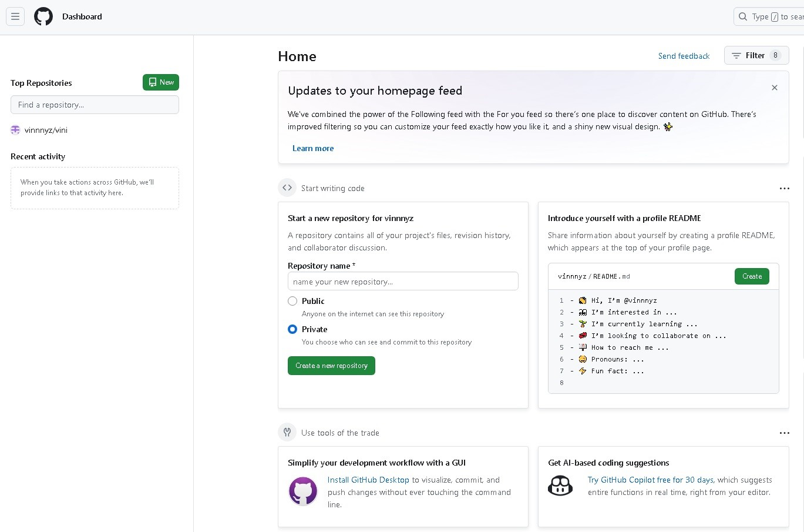

Trabalho: Páginas da Internet
Esta página foi desenvolvida com o intuito de demonstrar conhecimentos em criação de páginas de internet. Aqui irei demonstrar resumidamente como foi o processo de criação da página, analisando um pouco da apresentação do programa utilizado (GitHub), código HTML e seus respectivos elementos de estilização (CSS) utilizados na página.
GitHub
Para criar esta página, optei pela plataforma do GitHub, que é uma plataforma gratuita, porém muito dinâmica e eficiente. O GitHub oferece uma variedade de recursos e ferramentas poderosas, como GitHub Pages, que permite hospedar sites estáticos gratuitamente, e GitHub Actions, que automatiza tarefas de construção e implantação.
Criando a Página
Iniciando um novo projeto no menu principal do GitHub para criar a página,
o primeiro passo foi criar algumas pastas para abrigar itens como o Código HTML, CSS e as imagens que irão ser inseridas na página.
Sendo o código HTML responsável pela estrutura do site e o CSS responsável pela estilização.
Aqui, eu optei por desenvolver uma página pessoal simples contendo algumas informações sobre mim.
E na estrutura, optei por utilizar quatro elementos principais, sendo eles:
- Barra de navegação (nav): para facilitar a exploração da página, que contém três seções (início, Trabalho páginas da internet, folhas de cálculo).
- Introdução (header): contendo uma pequena foto, meu nome como título e curso.
- Conteúdo principal (main): onde desenvolvi alguns tópicos falando sobre mim, formação/experiência e curso.
- Rodapé (footer): onde contém três ícones com links que nos redirecionam para outras páginas como Facebook, LinkedIn e Escola Profissional de Gaia.
Código HTML


CSS
Na parte do código CSS é onde estilizamos a página e configuramos aspectos como: cores de fundo, edição de texto, dimensões de imagens, posicionamento em que cada elemento será exibido em display...